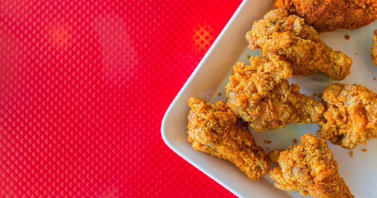
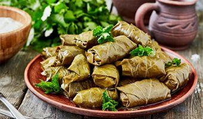
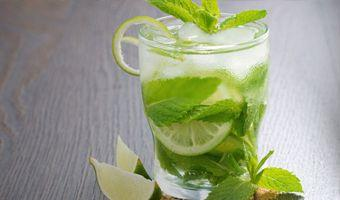
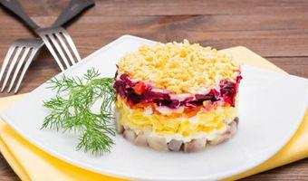
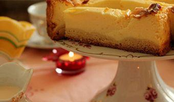

-

TAOMLAR
KFC TAYYORLASH RETSEPTI
KFC tovuq qanotchalarini tayyorlash retseptini ko'pchilik bilishni istaydi. Albatta restoran haqiqiy retseptni oshkor etmaydi va...
-

TAOMLAR
DO'LMA TAYYORLASH — UZUM BARGLARIDAN KOVATOK RETSEPTI
Tokli do'lma (kovatok) uzum barglaridan tayyorlanadigan nafaqat o'zbek, balki kavkaz, turk va yunon oshxonalarining mashhur...
-

ICHIMLIKLAR
MOXITO TAYYORLASH RETSEPTI
Yozning issiq kunlarida alkogolsiz moxito kokteyli chanqoqni qoldirish uchun ajoyib ichimlik sanaladi.
-
DESERTLAR
VAFLI TAYYORLASH RETSEPTI
Ushbu retsept bo'yicha tayyorlanadigan mazali va hushbo'y vafli yetarlicha ko'p bo'ladi.
-

SALATLAR
«SHUBA OSTIDAGI SELD» SALATI RETSEPTI
Shuba ostidagi seld yohud shuba salati eng mashhur ruscha salatlardan biridir. U salatsiz deyarli hech bir bayram, ayniqsa...
-

DESERTLAR
CHIZKEYK TAYYORLASH RETSEPTI — 5 TA ENG MAZALI TURI
Chizkeyk — yevropa va amerika oshxonasining klassik pishirig'i. U klassik, likyorli, bananli, shokoladli yoki tvorogli bo'lishi mumkin.